消息的更多操作
在聊天窗口里右键一条消息，可以复制、引用回复、转发、Pin、撤回或删除它，也可以一次选中多条消息合并转发给别人。本章逐一介绍这些操作，单聊和群聊的用法相同。
- 适用：全体员工
- 单聊、群聊通用
- 撤回：只能撤回自己 2 分钟内发出的消息
消息的右键菜单
在消息气泡上点鼠标右键，会弹出这条消息可用的操作。菜单项随消息的类型和发送者而变化，用不了的项不会出现。
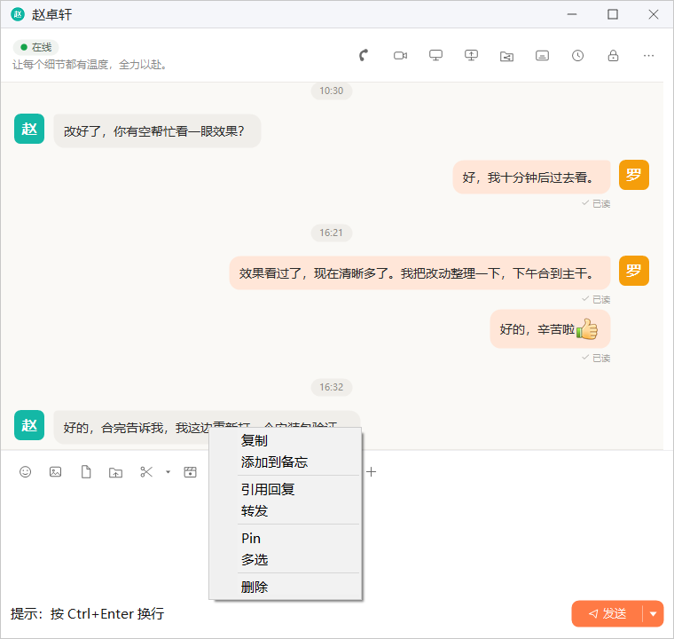
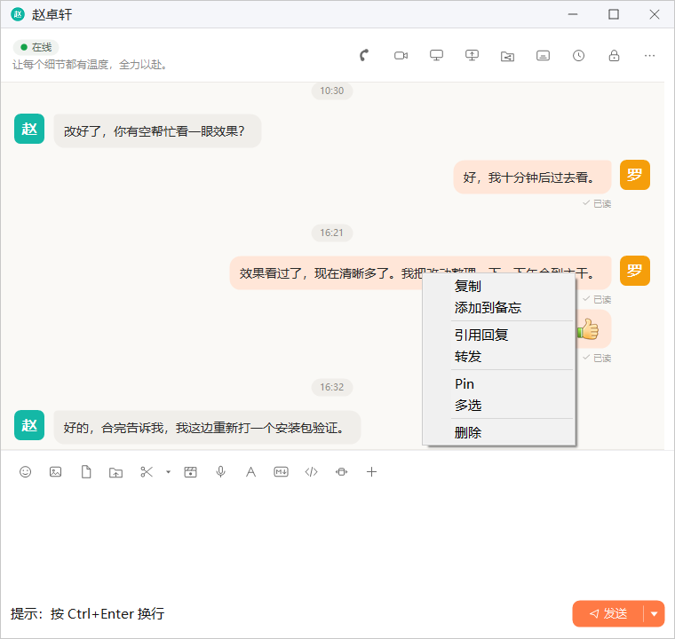
| 菜单项 | 作用 |
|---|---|
| 复制 | 把消息内容复制到剪贴板 |
| 添加到备忘 | 以这条文字为内容新建一条个人备忘。群聊里分成 添加到我的备忘 和 添加到群备忘，后者只有群主和管理员能看到。备忘的用法见「备忘与提醒」 |
| 引用回复 | 引用这条消息进行回复，见下文「引用回复」 |
| 转发 | 把这条消息发给其他人或群，见下文「转发」 |
| Pin / 取消 Pin | 把消息钉在会话顶部，见下文「Pin」 |
| 多选 | 进入多选状态，一次处理多条消息，见下文「多选」 |
| 撤回 | 只对自己 2 分钟内发出的消息出现，见下文「撤回」 |
| 删除 | 从你的聊天记录里删除这条消息，见下文「删除」 |
图片、链接与代码卡片的额外菜单项
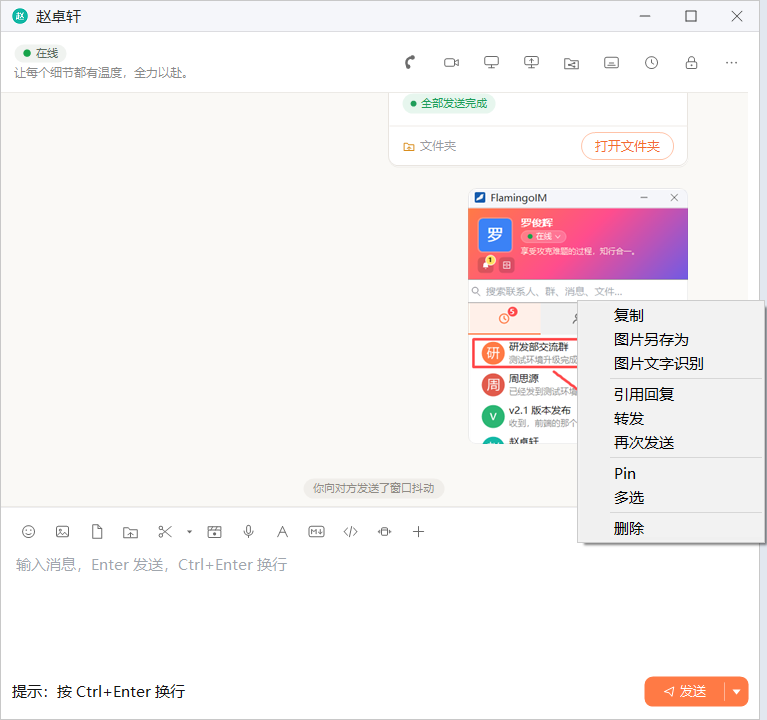
- 图片消息：图片另存为 把图片保存到你指定的位置；图片文字识别 识别图中的文字（见图片文字识别）；再次发送 把这张图作为一条新消息再发到当前会话。
- 在链接上右键：菜单最前面多出 在浏览器中打开 和 复制链接地址。
- 代码卡片：复制 换成 复制代码，并多出 在窗口中查看、另存为…、添加批注…，见「代码片段」。
- Markdown 卡片：复制 换成 复制 Markdown 源文本，并多出 在窗口中查看，见「Markdown 文档」。
发送失败的消息可以重新编辑如果一条文字消息没有发出（例如被服务器拒收），右键它会出现 重新编辑，点击后原文回到输入框，修改后再发送即可。
撤回
发错了消息，可以在发出后 2 分钟内撤回。超过 2 分钟后，右键菜单里就不再有 撤回。
- 在自己刚发出的消息上点右键，选 撤回。
- 这条消息在双方的聊天窗口里都变成一行灰色提示，你这边显示「你撤回了一条消息」。
- 撤回的是文字消息时，提示后面会跟着一个 编辑 链接。点它，原文会放回输入框，改好后重新发送。编辑 链接在撤回后 5 分钟内有效。
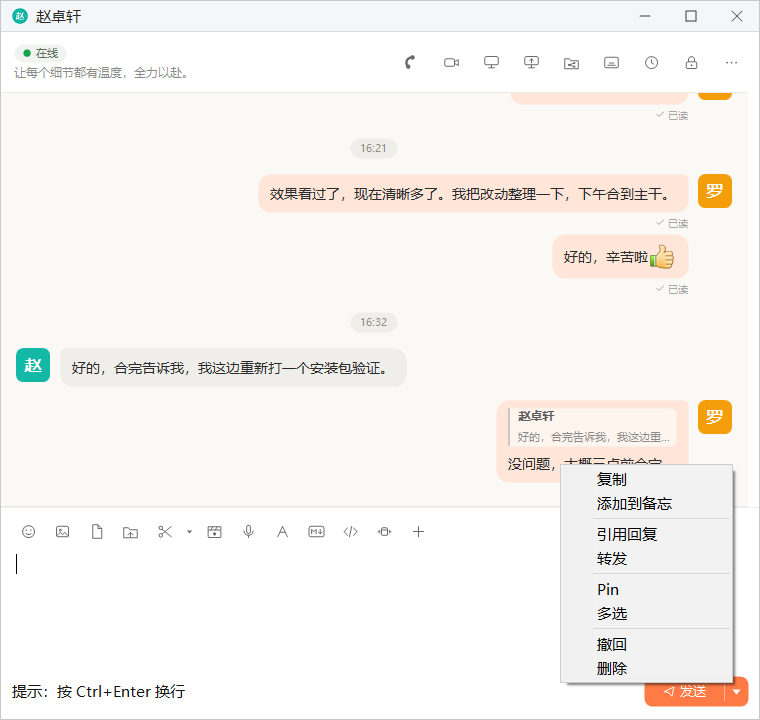
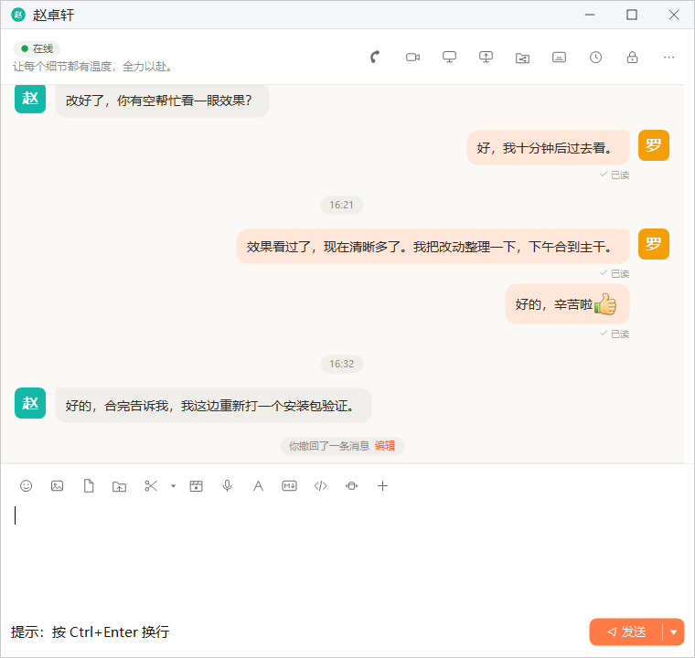
引用回复
在群聊或一段较长的对话里，引用回复能让对方清楚你回复的是哪一句。
- 在要回复的消息上点右键，选 引用回复。
- 输入框上方出现引用条，显示被引用的人和内容。不想引用了，点引用条右侧的 ⊗ 取消。
- 输入你的回复并发送。发出的气泡上方会带着被引用的内容，点它可以跳到原消息。
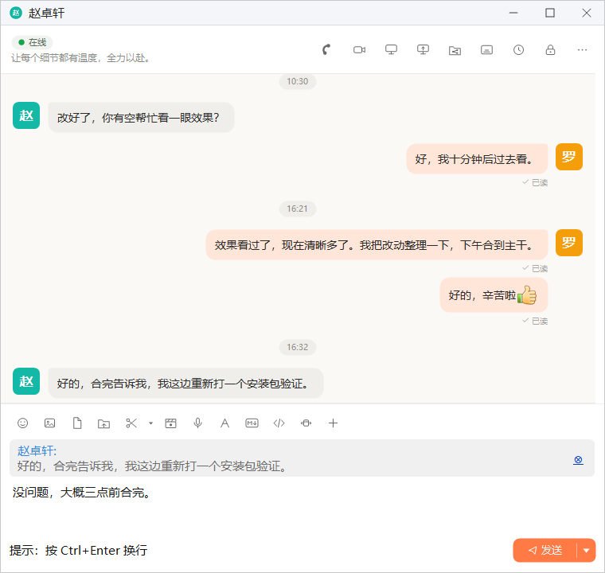
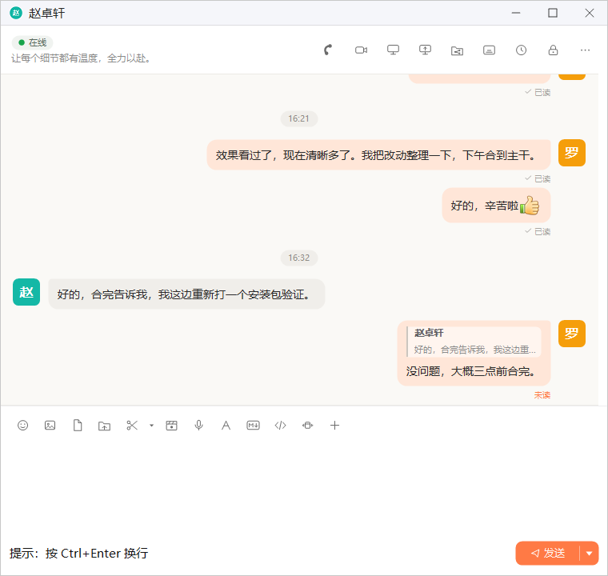
Pin
重要的消息可以 Pin（钉住），方便以后快速找到。Pin 在会话内共享，单聊双方都能看到。
- 在消息上点右键，选 Pin。消息旁边会出现一个图钉标记。
- 聊天窗口头部下方出现一条「已 Pin N 条 ›」，点它会打开消息记录窗口并直接切到 Pin 分类，列出本会话所有被 Pin 的消息（见「聊天记录管理」）。
- 不再需要时，在这条消息上右键选 取消 Pin。
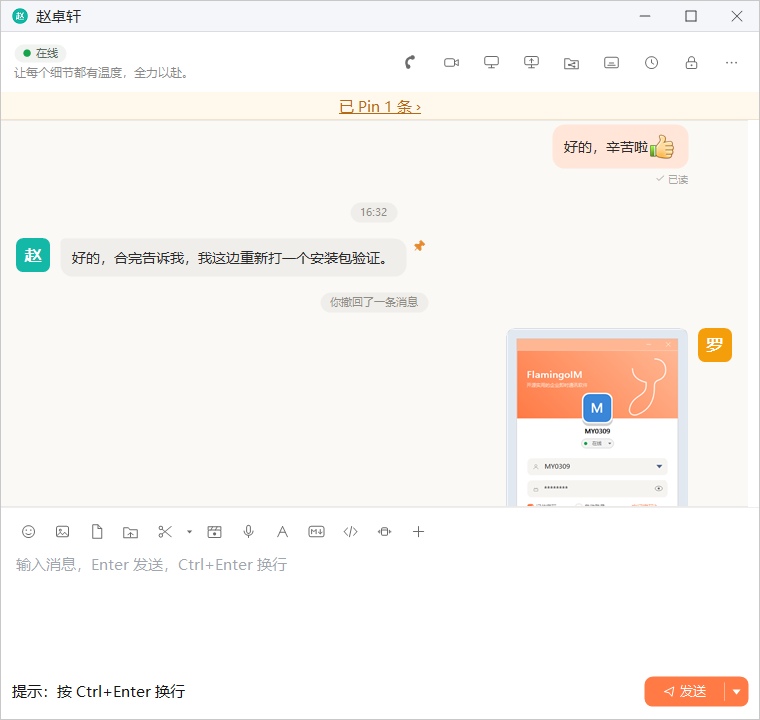
群聊里取消 Pin群里的 Pin 只有当初 Pin 这条消息的人以及群主、管理员可以取消。
删除
右键消息选 删除，这条消息会从你的聊天记录里消失，你登录的其他设备上也会一并删除。删除只影响你自己，对方的聊天记录里仍然保留这条消息；如果想让对方也看不到，请在 2 分钟内使用 撤回。
多选
需要一次转发或删除多条消息时，使用多选：
- 在任意一条消息上右键，选 多选。刚才右键的那条会被勾选，左侧显示一个打勾的圆圈。
- 点其他消息把它们也勾上，再点一次取消勾选。
- 在窗口底部的操作栏里选择要做的事：取消 退出多选；逐条转发 N 把选中的消息一条一条转发出去；合并转发 N 把它们打包成一条「聊天记录」转发；删除 N 一次删除。按钮上的 N 是能执行该操作的消息条数。
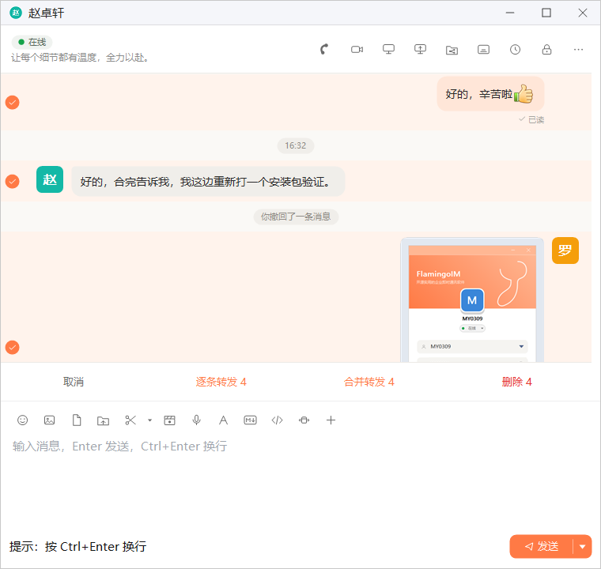
转发
右键一条消息选 转发，或在多选后点 逐条转发 / 合并转发，都会打开「转发」窗口：
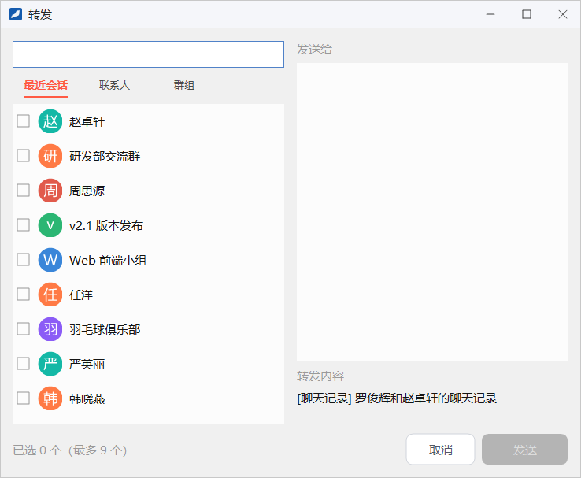
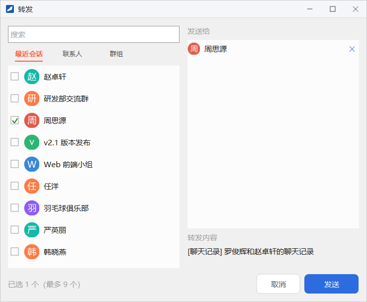
- 在左侧的 最近会话、联系人、群组 三个页签里勾选要发给的人或群，也可以在上方的搜索框里输入名字查找。
- 右侧 发送给 列出已选的对象，点某一项右侧的 ✕ 可以去掉它。一次最多选 9 个，左下角显示「已选 N 个（最多 9 个）」。
- 确认右下方 转发内容 无误后，点 发送。
这些消息不能转发文件夹、接龙、文件共享、屏幕共享和入群邀请这几类消息不能转发，它们的右键菜单里没有 转发；多选时如果混有这类消息，转发窗口会提示跳过了几条。其中接龙可以随合并转发进入聊天记录。在线直传的文件服务器上没有保存：逐条转发时，本机还留着这个文件就改为以离线文件重新发送，本机已经没有时无法转发；合并转发时文件本身不会随记录发出。帖子群不能作为转发对象。
合并转发与「聊天记录」卡片
合并转发会把选中的多条消息打包成一张「聊天记录」卡片发出去。下面的例子里，罗俊辉把与赵卓轩的 4 条消息合并转发给了周思源，图中是周思源看到的样子：
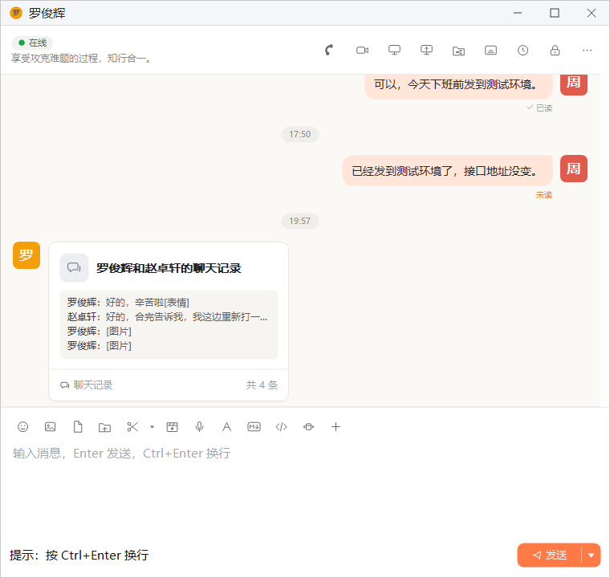
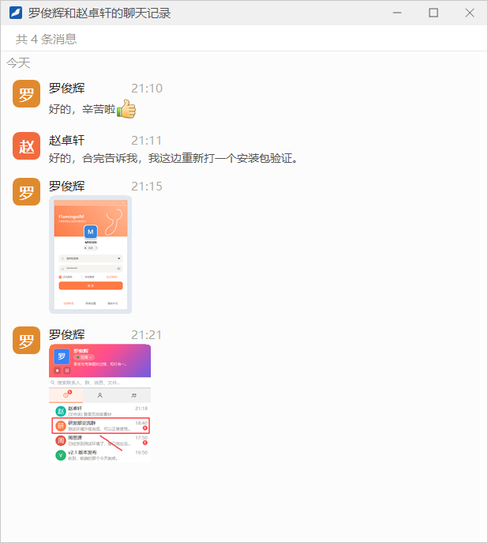
卡片上显示标题「XX和XX的聊天记录」、前几条消息的摘要，以及底部的「聊天记录」与「共 N 条」。点卡片会打开查看窗，按时间列出每条消息的发送者、时间和内容，其中的图片可以点击下载查看。